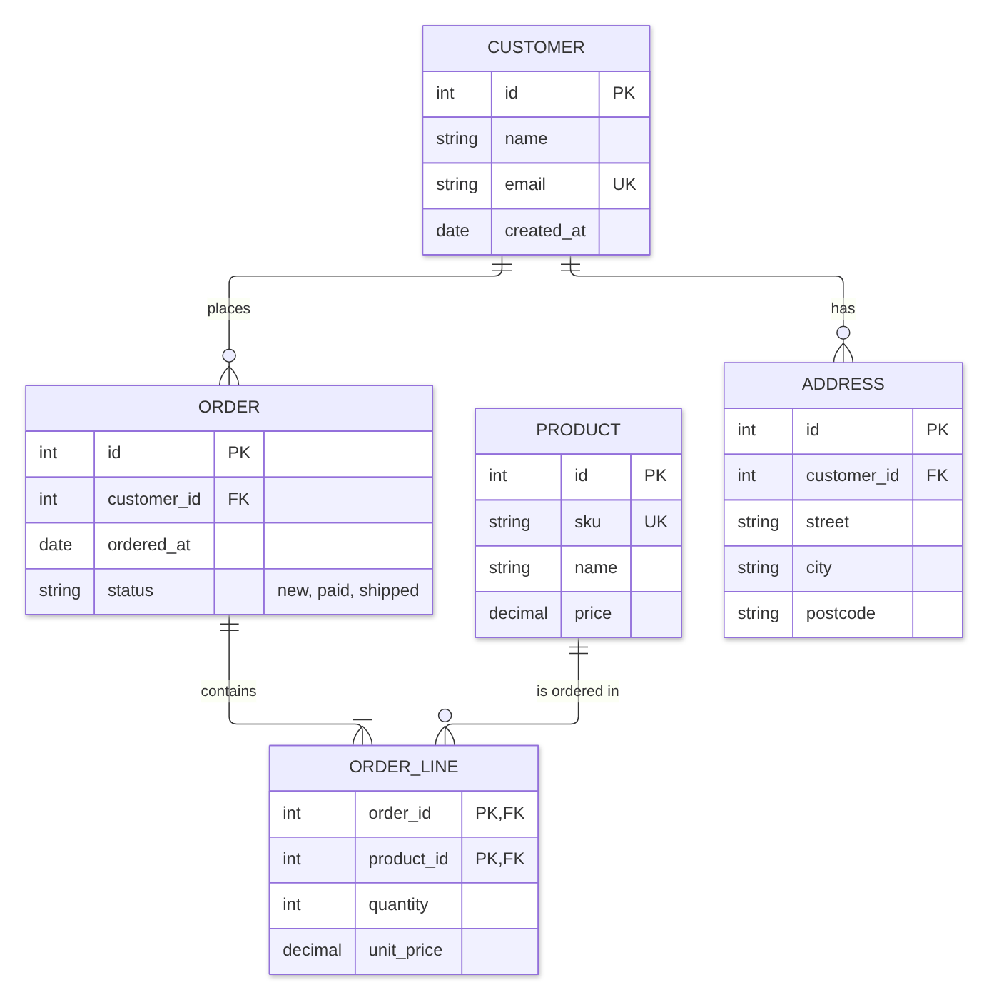

Guide · Confluence Cloud
ER diagram in Confluence Cloud: entity relationship diagrams, free with Mermaid
Confluence Cloud does not draw Mermaid on its own. Paste a Mermaid erDiagram block into a page and it stays a code block: readers see the tables as text, not as an entity relationship diagram. A Mermaid app draws it. With Mermaid Editor for Confluence, a free app on the Atlassian Marketplace, you type the tables and relationships and the ER diagram draws next to them while you type. Below: the steps, an orders and customers model to copy, how the crow’s foot symbols work, and the mistakes that add boxes you did not ask for.
What Confluence Cloud does with Mermaid on its own
Confluence Cloud does not draw Mermaid itself. In our tests in October and November 2026, a ```mermaid block pasted into a page became an ordinary code block: readers see the tables as text, not the diagram. The code is kept safely, but nothing is drawn.
To see the diagram you need a Mermaid app that adds a macro to the editor, or you draw the diagram elsewhere and upload a picture. How to add Mermaid diagrams to Confluence Cloud compares those routes.
How to add an ER diagram with Mermaid Editor for Confluence
Full disclosure: Dortus makes this app. The steps:
- A Confluence admin installs Mermaid Editor for Confluence from the Atlassian Marketplace. The app is free.
- Open the page in edit mode. Type
/mermaidand choose Mermaid Editor. You can also open the + insert menu in the toolbar and search for Mermaid Editor. - The editor opens with the code on the left and a live preview on the right. Click the ER example to start from a short customer and order model, or paste the example from this page. If you paste a block that starts with
```mermaid, the fences are removed for you. - Change the text. The preview redraws as you type. If a line is wrong, the preview says what is wrong and names the line, and that line is marked in the code.
- Click Insert diagram, or press Ctrl+Enter (Cmd+Enter on a Mac). Publish the page.
- To change it later, select the diagram in the editor and click the pencil icon. Versions in the editor brings back any of the last 20 saves.
On the page the diagram fits the width of the page. Hover over it, or tab to it, for the zoom buttons. Click it, or use Open large, to see it in a big window. SVG and PNG download the diagram for a slide or an email. In Confluence’s dark mode the diagram is drawn in Mermaid’s dark colours. The app has 12 examples to start from: flowchart, sequence, class, state, Gantt, pie, mindmap, timeline, journey, ER, architecture and kanban.
Where it lives: the app runs on Atlassian Forge. The Mermaid code is saved in the macro on the page, earlier versions in Forge storage in your own Atlassian site, and the diagram is drawn in the browser of the person reading the page.
Example: orders and customers
A small shop database: customers place orders, an order has order lines, each line points to a product, and a customer can have addresses. Copy it and change the tables to your own schema.
erDiagram
CUSTOMER ||--o{ ORDER : places
ORDER ||--|{ ORDER_LINE : contains
PRODUCT ||--o{ ORDER_LINE : "is ordered in"
CUSTOMER ||--o{ ADDRESS : "has"
CUSTOMER {
int id PK
string name
string email UK
date created_at
}
ORDER {
int id PK
int customer_id FK
date ordered_at
string status "new, paid, shipped"
}
ORDER_LINE {
int order_id PK, FK
int product_id PK, FK
int quantity
decimal unit_price
}
PRODUCT {
int id PK
string sku UK
string name
decimal price
}
ADDRESS {
int id PK
int customer_id FK
string street
string city
string postcode
}
Drawn with Mermaid 12.2, the version the app uses.
How the syntax works
erDiagramon the first line names the diagram type.- A relationship is: table, symbols, table, colon, label.
CUSTOMER ||--o{ ORDER : placesreads “one customer places zero or more orders”. - The symbols on each side of the line say how many:
||exactly one,|ooro|zero or one,}ooro{zero or more,}|or|{one or more. Each symbol is about the table it stands next to: inCUSTOMER ||--o{ ORDER,||says each order has exactly one customer ando{says a customer has zero or more orders. --draws a solid line (an identifying relationship)...draws a dashed line (non-identifying).- A label with spaces needs quotes:
"is ordered in". - A table’s columns go between
{and}, one per line: type, name, then optional keys and a comment. Keys arePK,FKandUK; a column that is both isPK, FK. A comment goes in quotes at the end, as instring status "new, paid, shipped". - Table names can use letters, digits, underscores and hyphens:
ORDER_LINE.
Let an AI assistant write the first version. ChatGPT and Claude can write Mermaid. Describe your tables, or paste the CREATE TABLE statements, in plain words, ask for a Mermaid erDiagram with PK and FK marked, and paste the answer into the editor. Read the result: assistants sometimes invent a column or use syntax that does not draw.
Common mistakes and how to fix them
- A relationship without a label.
CUSTOMER ||--o{ ORDERis an error: Mermaid wants a colon and a label. The editor names the line. Fix: add: places, or: ""for an empty label. - A label with spaces and no quotes.
PRODUCT ||--o{ ORDER_LINE : is ordered ingives no error, but in our test the extra words became tables of their own, called “ordered” and “in”. Fix:"is ordered in". - A space in a table name.
ORDER LINEwas drawn as two tables, ORDER and LINE. Fix:ORDER_LINE. - Commas or spaces in the columns.
int id PK,at the end of a line, or a column name with a space such asstring first name, is an error. Fix: one column per line, no commas between columns, andfirst_nameas one word. - Arrows from a flowchart.
CUSTOMER --> ORDER : placesis an error in an ER diagram. Fix: use the symbols, for example||--o{.
Other ways
Other Mermaid apps exist on the Atlassian Marketplace; the Mermaid guide lists points worth comparing. For a data model you want to lay out by hand, with every table placed exactly, a drawing app such as draw.io fits better.
FAQ
Can Confluence Cloud draw an ER diagram from text?
Not on its own. In our tests a pasted Mermaid erDiagram block stayed a code block. A Mermaid app such as Mermaid Editor for Confluence draws the entity relationship diagram on the page.
What does ||--o{ mean in a Mermaid ER diagram?
It is crow's foot notation. || on the left means exactly one, o{ on the right means zero or more. CUSTOMER ||--o{ ORDER : places reads: one customer places zero or more orders.
How do I mark primary and foreign keys?
Write PK, FK or UK after the column name, for example int customer_id FK. A column that is both a primary and a foreign key gets PK, FK.
Can the app read my database and draw the diagram?
No. Mermaid Editor for Confluence draws what you type; it does not connect to a database. You can give your CREATE TABLE statements to ChatGPT or Claude, ask for a Mermaid erDiagram, and check the result in the editor.
What is the difference between a solid and a dashed line?
A solid line, --, is an identifying relationship: the child cannot exist without the parent. A dashed line, .., is non-identifying. In Mermaid you only change the two characters in the middle.
By diagram type
An ER diagram shows tables and how they link. Mermaid diagram examples for Confluence has a short example of each of twelve diagram types. Guides that go deeper on one type:
- Gantt charts in Confluence Cloud
- Sequence diagrams in Confluence Cloud
- Mind maps in Confluence Cloud
- Class diagrams in Confluence Cloud
- State diagrams in Confluence Cloud
- Timelines in Confluence Cloud
- Pie charts in Confluence Cloud
- Flowcharts in Confluence Cloud
Questions
An example that does not draw for you, or a mistake we missed? Email support@dortus.com.
Mermaid Editor for Confluence by Dortus
Type the diagram, watch it draw
A Confluence macro with Mermaid code on the left and a live preview on the right. The code stays in the page, so the diagram stays editable. Runs on Atlassian Forge.
See also: How to add Mermaid diagrams to Confluence Cloud (including diagrams from ChatGPT or Claude)